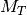
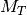
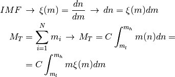
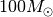
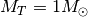
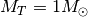
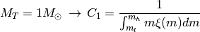
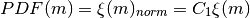

4. Synthetic clusters¶
The process by which synthetic clusters are generated by ASteCA is described in the sections that follow.
4.1. IMF sampling¶
The initial mass function (IMF) is the distribution of initial masses
for a population of stars. For a population of  stars with
masses
stars with
masses  and a total mass of :
and a total mass of :

where and are the mass limits for the IMF
( is fixed to  in the code) and
 is a normalization constant. Setting the total mass to unity,
, allows us to obtain the normalization constant
is a normalization constant. Setting the total mass to unity,
, allows us to obtain the normalization constant
 and treat the normalized IMF as a PDF:
and treat the normalized IMF as a PDF:

and thus the normalized IMF can be written as:

This is the first step, performed by the get-IMF-PDF function for a given selected IMF (Chabrier 2001, Kroupa et al. 1993, Kroupa 2002)
Once the PDF is generated, every time a new synthetic cluster is created the get-mass-dist function is called from within synth-cluster. This former function takes the PDF and samples a number of masses randomly from it, following the probabilities distribution given by the PDF, until the mass fixed by the total-mass parameter is achieved.
The get-mass-dist function thus returns a distribution of masses probabilistically sampled from a certain IMF, whose masses sum up to a total cluster mass.